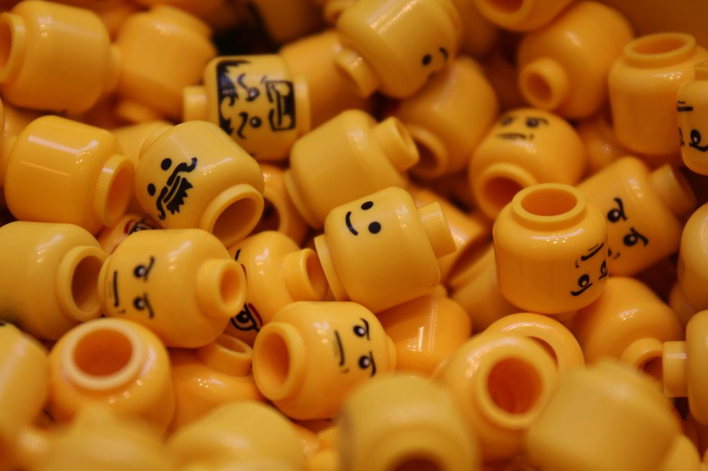

Projects
Sentiment Analysis Bot
I built a program that determines most prevalent emotions inside of text. I used this as an exploratory Data Science project looking into emotions behind popular media. I created multiple versions of this program. The final version is used to analyze the sentiment of posts on reddit.


Project 2 Name
Project description and details go here.